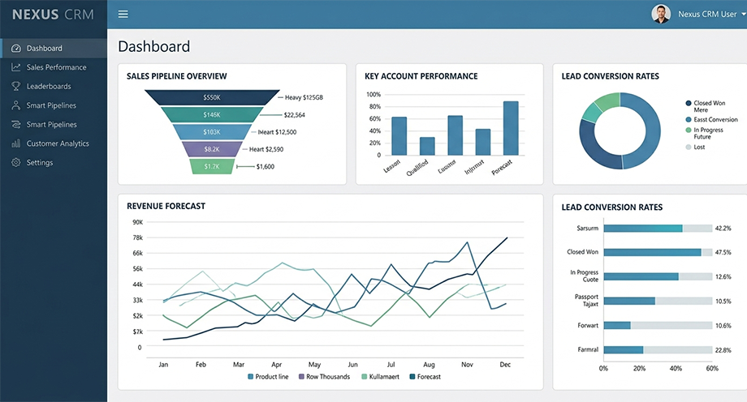
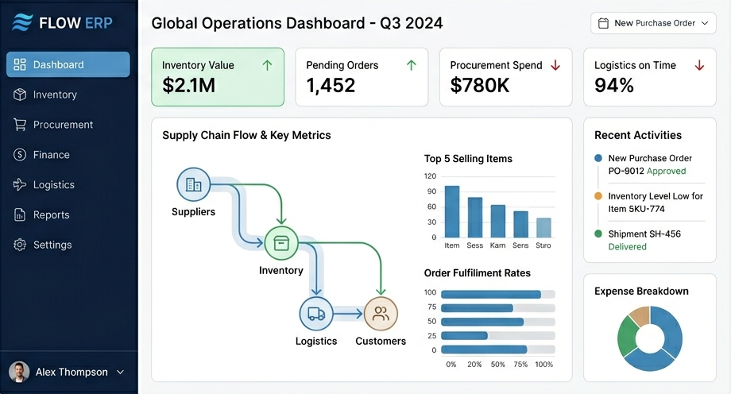
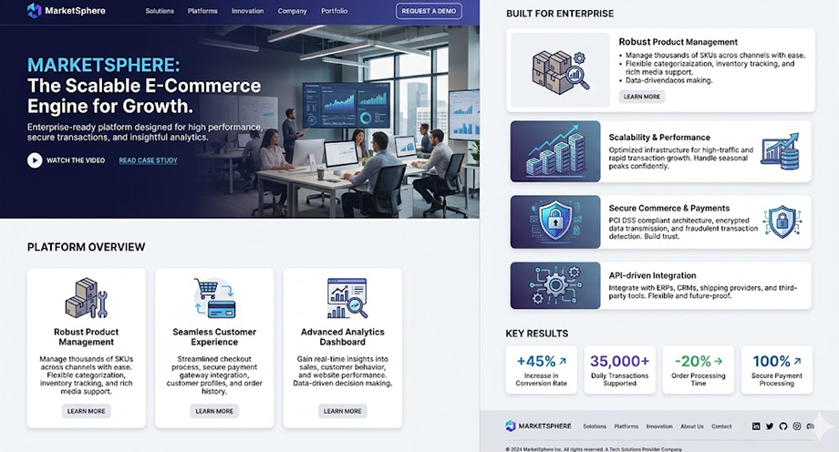
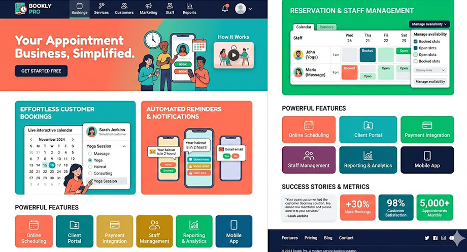
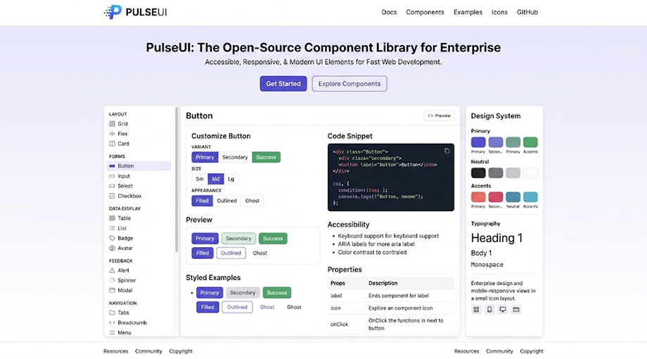
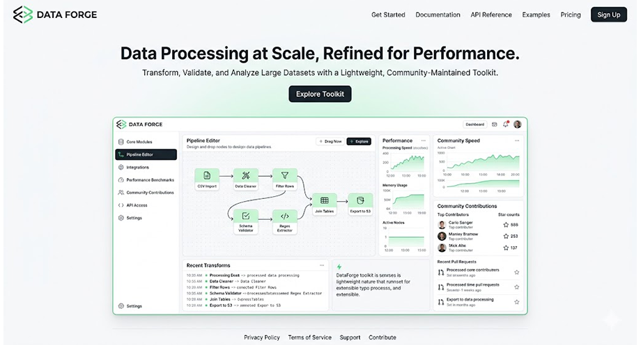

Our Enterprise Software Solutions
Custom platforms designed to optimize business operations, automate workflows, and support organizational growth.
At OrbitCraft, we believe every project is an opportunity to transform ideas into meaningful digital experiences. From modern web applications to innovative software solutions, we work closely with our clients to understand their goals and deliver products that make an impact. Explore our portfolio below and discover how we've helped businesses bring their vision to life through technology, creativity, and collaboration.
Custom platforms designed to optimize business operations, automate workflows, and support organizational growth.
Modern web applications and online platforms focused on customer engagement, sales, and digital services.
Community-driven projects developed to contribute to the broader technology ecosystem and encourage collaboration.

A comprehensive customer relationship management platform developed for a multinational sales organization. Features include lead tracking, automated reporting, sales forecasting, and team performance analytics.
An enterprise resource planning system built to unify inventory management, procurement, finance, and logistics into a single streamlined platform, reducing operational overhead and improving visibility across departments.


A scalable e-commerce platform supporting thousands of daily transactions. Features include product management, secure payments, customer accounts, and advanced analytics.
An online booking and reservation platform created for service-based businesses. Customers can schedule appointments, receive automated reminders, and manage bookings through a responsive web interface.


An open-source component library providing accessible, responsive user interface elements for modern web applications. Adopted by developers seeking rapid prototyping and consistent design systems.
A lightweight data processing toolkit that helps developers transform, validate, and analyze large datasets. Built with extensibility and performance in mind, and maintained through community contributions.
